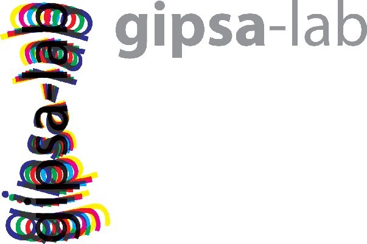
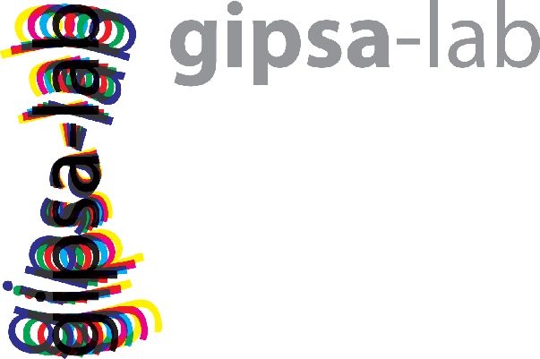

$for(author-meta)$
$endfor$
$if(date-meta)$
$endif$
$if(keywords)$
$endif$
$if(title-prefix)$$title-prefix$ – $endif$$pagetitle$
$if(quotes)$
$endif$
$if(highlighting-css)$
$endif$
$if(theme)$
$else$
$endif$
$for(css)$
$endfor$
$if(math)$
$math$
$endif$
$for(header-includes)$
$header-includes$
$endfor$
$for(include-before)$
$include-before$
$endfor$
$if(title)$
$title$
$if(subtitle)$
$subtitle$
$endif$
$for(author)$
$author$
$endfor$
$if(date)$
$date$
$endif$
$if(supervisors)$
$supervisors$
$endif$
$if(institut)$
$institut$
$endif$
$if(logo)$
 
$endif$
$if(broadcast)$
$endif$

$endif$
$if(broadcast)$
$endif$
$endif$
$if(toc)$
$endif$
$body$
$for(include-after)$
$include-after$
$endfor$